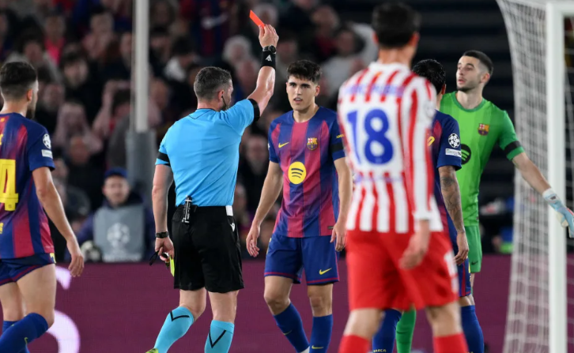

El Metropolitano decide el último pasajero
El fútbol europeo se detiene este martes para presenciar uno de los duelos más intensos de los últimos años en el continente. El Atlético de Madrid recibe al FC Barcelona en el partido de vuelta de los cuartos de final de la UEFA Champions League.
Tras el resultado del partido de ida, el conjunto dirigido por el "Cholo" Simeone busca revertir la situación apoyado en su afición. "Sabemos que el ambiente será determinante", declaró el técnico argentino en rueda de prensa.

Claves del encuentro
- La solidez defensiva de los colchoneros en casa.
- El estado de gracia de los delanteros blaugranas.
- La gestión del cansancio físico tras la jornada de liga.
- El control del mediocampo como factor diferencial.
Por su parte, el equipo catalán llega con la intención de imponer su estilo de juego y asegurar su regreso a una semifinal europea tras años de ausencia. Los analistas coinciden en que el control del mediocampo será el factor diferencial.
Alineaciones probables y bajas
Ambos equipos presentan dudas en sus onces iniciales debido a molestias musculares de última hora. Sin embargo, se espera que las estrellas principales estén presentes desde el pitido inicial.
Seguí la cobertura completa en CNN en Español.